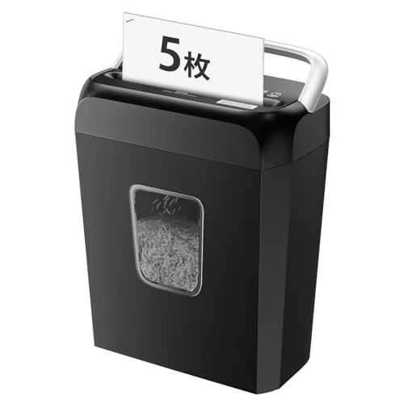
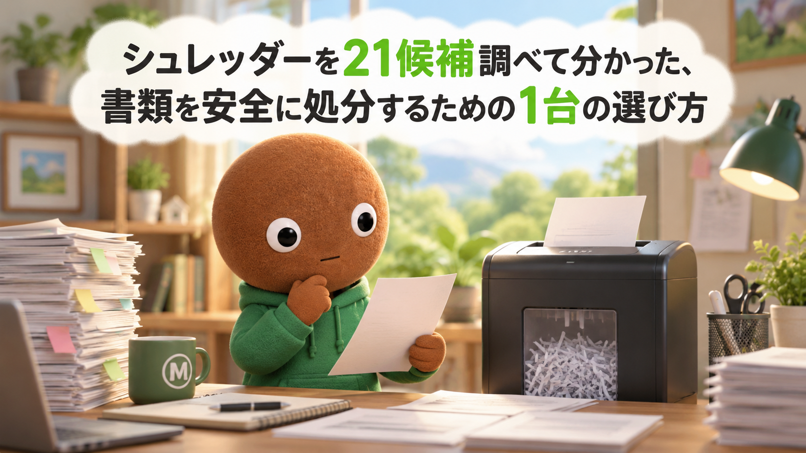
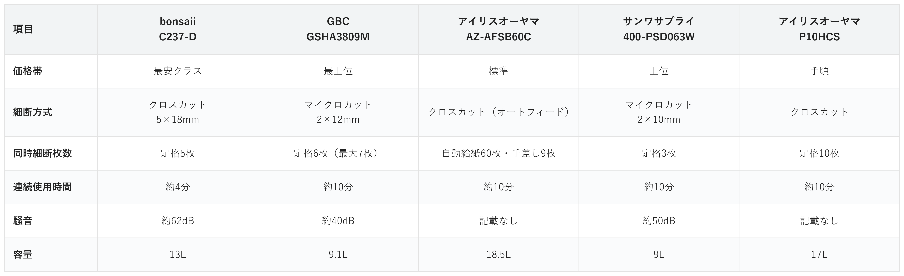

Amazonで見る確定申告の書類や郵便物の明細を、そのままゴミ箱に捨てるのが怖い人へ
その紙、
そのまま捨てて大丈夫？
シュレッダー21候補を調査。安さ・静音性・連続使用時間・細断の細かさ・投入口の広さから、選び方の違う5商品を比較しました。
自分に合うシュレッダーを探す
この記事はAmazonアソシエイト・プログラムの参加者として、紹介料を得る場合があります（PR）。仕様は調査時点の情報です。
21候補から、選び方の違う5商品に絞りました。まずは気になる1台へ。
向いている人・向いていない人と、低評価レビューもまとめています。
21候補を調査
5商品に厳選
低評価品も確認済み
結論から先に言うと：
あなたの使い方に合う、1台を。
横にスワイプして、5商品を見比べる
選び方の基準は2つ
調べてわかったのは、基準はシンプルでした。
1つ目は「細断方式」。クロスカットかマイクロカットかで、細断後の紙片の大きさがまったく違います。
2つ目は「連続使用時間」。一度に何分間フル稼働できるかは、まとめて処分したい書類の量に直結する項目です。
価格帯にはかなり幅がありました。
比較表

価格帯・細断方式・同時細断枚数・連続使用時間・騒音・容量の比較（価格帯は最安クラス〜最上位の5段階）
bonsaii C237-D
- 最安クラス
- 細断方式：クロスカット5×18mm
- 定格5枚同時・連続使用時間約4分
- 騒音約62dB・容量13L
アイリスオーヤマ P10HCS
- 手頃
- 細断方式：クロスカット
- 定格10枚同時・連続使用時間約10分
- 容量17L・CD/DVD/カード対応
アイリスオーヤマ AZ-AFSB60C
- 標準
- 細断方式：クロスカット（オートフィード）
- 自動給紙最大60枚・手差し時9枚/連続使用時間約10分
- 容量18.5L
サンワサプライ 400-PSD063W
- 上位
- 細断方式：マイクロカット2×10mm
- 定格3枚同時・連続使用時間約10分
- 騒音約50dB・容量9L
GBC GSHA3809M
- 最上位
- 細断方式：マイクロカット2×12mm
- 定格6枚（最大7枚）・連続使用時間約10分
- 騒音約40dB・容量9.1L
向いてる人
- とにかく初期費用を抑えたい人
- コンパクトな設置スペースで足りる人
向いてない人
- まとめて大量に処分したい人
選ぶ決め手とにかく安さを重視するなら、この1台です。
低評価品も見ました（今回調べた5商品とは別枠）
今回の5商品そのものへの低評価レビューは、目立った指摘は見当たりませんでした。代わりに、サクラチェッカーで「要注意」判定だった2商品を確認しています。出品者不明のマイクロカット機（ASIN B0CRQWB1RX）は、レビュー42件とカテゴリ平均435件を大きく下回り、相場よりかなり安い値下げパターンも見られました。販売元の電話番号が香港のものだと表示されており、日本人サクラレビューの可能性も指摘されています。iOCHOWのオートフィード機（ASIN B08NVJR7FX）は公式情報がほとんど無く、メーカーの実態が不透明で、サクラチェッカーの推定では本社所在国は中国、「怪しい日本語評価」「AIレビュー」の検出も報告されていました。
参考：サクラチェッカー
C237-Dは、
まず1台、シュレッダーを
試したい人に最も向く1台です。
A4用紙5枚を同時に細断でき、
カードやホッチキス針にも
対応しています。
連続使用時間は約4分、
騒音は約62dBです。
5商品の中でもっとも手頃な価格帯です。
向いてる人
- 夜間や在宅ワーク中に使いたい人
- 個人情報をしっかり細断したい人
向いてない人
- とにかく安さを優先したい人
選ぶ決め手静音性を重視するなら、この1台です。
低評価レビューも見ました
今回調べた範囲では、GSHA3809M自体への目立った低評価の指摘は見当たりませんでした。なお、Amazon上の商品タイトルは「A3809M-AZ」という表記になっている場合がありますが、公式サイト表記の「GSHA3809M」とスペック（マイクロカット・最大7枚・静音）は一致しています。
GBCのGSHA3809Mは、
音を気にせず使いたい
人に最も向く1台です。
アコ・ブランズ・ジャパン公式が
「業界最静音」とうたう約40dBで、
マイクロカット2×12mmに対応しています。
定格6枚・最大7枚を
連続約10分細断できます。
約40dBという静音性は5商品の中でこの1台だけです。
向いてる人
- まとめて大量の書類を処分したい人
- セットしたらその場を離れたい人
向いてない人
- とにかく安さを優先したい人
選ぶ決め手スタミナ（連続使用時間）を重視するなら、この1台です。
AZ-AFSB60Cは、
大量の書類を一気に
片付けたい人に最も向く1台です。
自動給紙で最大60枚まで
一度にセットでき、
手差しでも連続約10分使えます。
除電クリーニング機能で、
自動で逆転・正転の
清掃運転も行います。
向いてる人
- 個人情報の保護レベルを重視したい人
- CDやカードも一緒に処分したい人
向いてない人
- 大量の書類を一気に処分したい人
選ぶ決め手細断の細かさを重視するなら、この1台です。
低評価レビューも見ました
マイベストの検証では、定格細断枚数が3枚と少なく、連続運転が10分で止まる点が挙げられ、大量の紙は何回かに分けて投入する手間があると書かれていました。口コミ（1件）には、ハガキや写真に対応していない点が書かれていました。
参考：マイベスト（検証・口コミ）／サンワダイレクト公式（仕様）
400-PSD063Wは、
細断後の紙片をできるだけ
細かくしたい人に最も向く1台です。
2×10mmのマイクロカットで、
CD・DVD・カードにも
対応しています。
騒音は約50dB、
連続使用時間は約10分です。
2×10mmは5商品の中でもっとも細かい部類です。
向いてる人
- ホチキス留めをまとめて処分したい人
- 週末にまとめて片付けたい人
向いてない人
- 静音性を重視したい人
選ぶ決め手投入口の広さを重視するなら、この1台です。
P10HCSは、
ホチキス留めの書類を
そのまま処分したい人に最も向く1台です。
A4用紙10枚を、
ホチキス針をつけたまま
同時細断できます。
連続使用時間は約10分、
ダストボックス容量は17L。
CD・DVD・カードの細断にも対応します。
21候補をどう絞った？ 調査の経緯を見る
確定申告の書類や郵便物の明細って、そのままゴミ箱に捨てるのがちょっと怖くないですか。名前や住所が見える紙をまとめて処分したいのに、シュレッダーの種類が多すぎて選べません。
なので今回、私がシュレッダーのスペックを調べ比較しました。各商品ごとに、向いてる人・向いてない人も調べているので、自分に合ったシュレッダーを探してみてください。
21候補から5つに絞り込みました
シュレッダーは、価格.comの売れ筋ランキングだけでも100件以上が並ぶジャンルです。今回は主要候補21件を調べ、価格帯・機能・出典の強さが重複しないように5商品まで絞りました。
調べたのは、次の21候補です。
- ナカバヤシ5機種
- サンワサプライ4機種
- アイリスオーヤマ5機種
- 良品計画1機種
- bonsaii2機種
- アコ
- ブランズ
- ジャパン1機種
- シンプラス1機種
- フェローズ1機種
- オーム電機1機種
無印良品のハンドシュレッダーやナカバヤシZ2777は手動式でした。モーターが無いと、静音性や連続使用時間の軸で電動機と比較できないため見送りました。
アイリスオーヤマHS4SCはA5専用機で、A4非対応でした。投入口の広さを重視する今回の軸には合わないため見送りました。
フェローズLX25MAは、クロスカットともマイクロカットとも違う「ミニカット」方式でした。今回の5段階の軸に当てはまらないうえ、価格.com上のレビューも1件のみだったため見送りました。
シンプラスSP-SRD03は、メーカー公式の一次情報が確認できず出典が弱いため見送りました。
ナカバヤシNSE-HS01は細断速度2.8秒という魅力がある一方、クロスカット方式のため細断の細かさで400-PSD063Wに劣ると判断し見送りました。
※2026-10-02追記：公開後の在庫確認で、05枠のサンワサプライ 400-PSD031（A4×10枚同時細断）が在庫切れになっていました。
そのため、同じくA4×10枚同時細断でホッチキス対応のアイリスオーヤマ P10HCSに差し替えました。連続使用時間は約2分→約10分、CD・DVD・カード対応も加わり、スペック面では上位互換です。
アイリスオーヤマは03枠（AZ-AFSB60C）と同ブランドになりますが、型番・特徴は異なります。
低評価の商品も見ました
上の21候補とは別に、サクラチェッカーが「要注意」と判定した商品を調べました。個別レビュー本文の真偽までは検証できないため、機械的に検出された事実だけを正直に書きます。
出品者不明のマイクロカット機は、レビュー42件とカテゴリ平均435件を大きく下回っていました。相場よりかなり安いという、サクラ商品にありがちな値下げパターンも見られました。
販売元の電話番号が香港のものだと表示されており、日本人サクラレビューの可能性も指摘されていました。
iOCHOWのオートフィード機は、公式情報がほとんど無く、メーカーの実態が不透明でした。
サクラチェッカーの推定では本社所在国は中国とされ、「怪しい日本語評価」「AIレビュー」の検出も報告されていました。
調べてみて驚いたこと
21候補を調べる中で、投入口の広さと連続使用時間はトレードオフになりがちだと分かりました。
A4を10枚同時に入れられる機種の中には、モーターへの負荷が大きく、連続使用時間が短くなっているものも見られました。
逆に、GSHA3809Mのように静音性を実現している機種は、定格枚数を6枚に抑えることで音を小さくしていました。
「たくさん入る」「静か」「連続で使える」の3つを同時に満たす機種は、今回の21候補には見当たりませんでした。
迷ったらこれ
ここまで読んでもまだ迷ったら、カードやホチキス針にも対応するbonsaii C237-Dが、価格も手頃で外しにくい1台です。
Amazonで見る→よくある質問
Q. クロスカットとマイクロカットはどちらが安全ですか。
A. 一般的に、紙片が細かいマイクロカットの方が個人情報の復元は難しくなります。今回の5商品では400-PSD063W（2×10mm）がもっとも細かい部類です。
Q. 連続使用時間を超えるとどうなりますか。
A. 多くの機種はモーターの過熱を防ぐため自動で停止し、一定時間の休止後に再び使えるようになります。休止に必要な時間は機種ごとに異なるため、取扱説明書の記載を確認しておくと安心です。
Q. ホチキス留めのままシュレッダーにかけても大丈夫ですか。
A. 今回の5商品はいずれもホチキス針対応をうたっています。対応枚数や針の太さには機種ごとに違いがあるため、取扱説明書の記載を確認してから使うと安心です。
Q. CDやカードも一緒に処分できますか。
A. GSHA3809M・400-PSD063W・P10HCSはカード・メディア類にも対応しています。C237-Dはカード・クリップ対応、AZ-AFSB60Cは紙メインの対応です。
Q. 静音性を重視するならどれがいいですか。
A. 今回調べた中では、アコ・ブランズ・ジャパン公式が「業界最静音」とうたうGSHA3809M（約40dB）がもっとも静かでした。
こんな記事も書いてます
ミートボーの調査部屋で他の記事も見る（全本）ミートボーの調査で他の記事も見る（全本）


出典
- 価格.com シュレッダー 満足度ランキング：kakaku.com
- 価格.com シュレッダー 人気売れ筋ランキング：kakaku.com
- マイベスト 家庭用シュレッダーのおすすめ人気ランキング：my-best.com
- 360life（週刊文春WEB） シュレッダーのおすすめランキング：360life.shinyusha.co.jp
- bonsaii公式ストア（Yahoo!ショッピング） C237-D：shopping.yahoo.co.jp
- マイベスト bonsaii C237-D実機レビュー：my-best.com
- アコ・ブランズ・ジャパン公式 スーパーサイレントシュレッダ特集：accobrands.co.jp
- 価格.com アコ・ブランズ・ジャパン GSHA3809M：kakaku.com
- アイリスオーヤマ公式サポート AFSB60C：irisohyama.co.jp
- アイリスオーヤマ公式 取扱説明書PDF（AFSB60C/AFSB60M）：irisohyama.co.jp
- サンワダイレクト公式 400-PSD063スペックページ：direct.sanwa.co.jp
- アイリスオーヤマ公式サポート P10HCS：irisohyama.co.jp
- Amazon.co.jp アイリスオーヤマ P10HCS：amazon.co.jp
- サクラチェッカー 検索結果（出品者不明マイクロカット機）：sakura-checker.jp
- サクラチェッカー 検索結果（iOCHOW オートフィードシュレッダー）：sakura-checker.jp